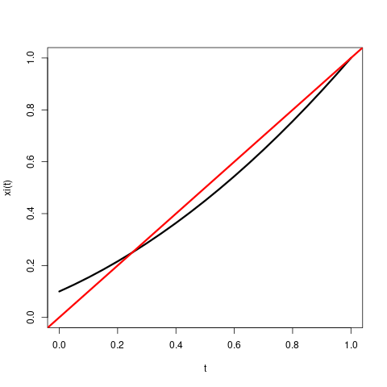
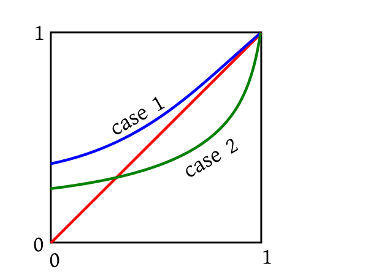
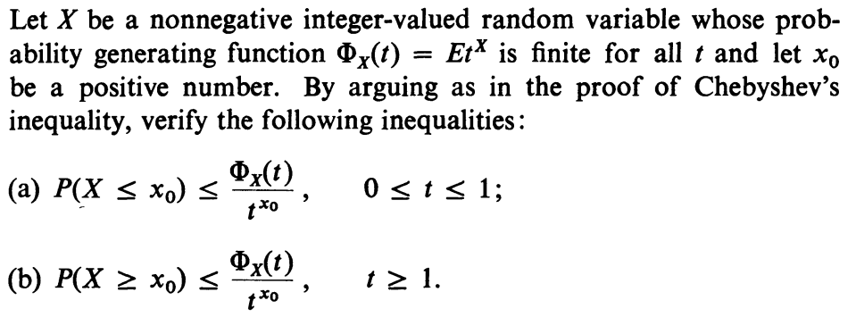

Video for this section
Thanks to the above theorem,
we can recover the probabilities from the PGF by repeated differentiation at $t=0$:
$$p_n = \frac{p^{(n)}(0)}{n!}$$.
Hence we get the following theorem.
::
EXERCISE 4: (Easy) Show that for $n\in{\mathbb N}$ we have
$$E(X(X-1)\cdots (X-n+1)) = p^{(n)}(1)$$.
::
EXERCISE 5: (Easy) Show that $E(t^X) = p(t)$.
::
EXERCISE 6: (Easy) Show that if $X,Y$ are independent random variables taking nonnegative integer values,
with PGFs $\xi(t)$ and $\psi(t)$, then the PGF of $X+Y$ is
$\xi(t)\psi(t)$.
Imagine a cell that will split into two cells after exactly one minute. Then, after one more minute, each of these two cells
will again split into two. If it goes on like this, then we shall have$2^n$ cells in the $n$-th generation. Clearly
understand how the generations are numbered. The initial cell belonged to generation 0. We shall
call the number of cells in the $n$-th generation $X_n$. Thus, $X_n = 2^n$. Also,
notice that when a cell splits into children, the original cell ceases to exist.
This
branching process is a deterministic
one. Now let us consider a random branching process. Here again we start with a single cell in generation 0. Thus $X_0 = 1$.
After a minute this cell "splits into" a random number of cells. The number may be any
nonnegative integer. In particular, we allow the number to be 0 or 1 with the following interpretations:
If the number is 0, then the
original cell has died without leaving any children.
If the number is 1, then the original cell
just continues into the next generation.
This number is the size of generation 1. We shall call it $X_1$. Let the distribution of $X_1$ be
given by $P(X_1=k) = p_k$ for $k=0,1,2,...$.
After one more minute each cell in generation 1 will independently split into children following the same distribution. And
the process will continue.
As before, $X_n$ will denote the number of cells in the $n$-th generation.
Cells will be shown as dots. The red dots denote cells that
have died without leaving any child. Try the animation a number of times to explore various possibilities.
We can do various interesting math with this process. But our aim is to show case a use of PGFs. So the problem we shall
address is "What is the extinction probability for this process?"
By extinction we mean the event that $X_n=0$ for some $n\in{\mathbb N}$. Notice that if some $X_n=0$, then we must
have $X_{n+1}= X_{n+2}=\cdots = 0$ also. So the extinction event is
$$\bigcup_{n\in{\mathbb N}}\{X_n=0\}$$.
Since $\{X_1=0\}\subseteq \{X_2=0\}\subseteq\cdots, $ hence the extinction probability is
$\lim_{n\rightarrow\infty} P(X_n=0)=\theta$, say.
How to find it in terms of $p_0,p_1,p_2,..$.?
If $p_0 = 1$ (which implies $p_1=p_2=\cdots=0$), then the extinction probability is surely 1.
If $p_0>0$, but $p_0+p_1 =1$ (which implies $p_2=p_3=\cdots=0$), then also the extinction probability is
1 (why?)
In these cases, we had no births to counter the deaths.
But if $p_n>0 $ for some $n\geq 2$, then we have births, and the interaction between
births and deaths becomes rather complicated. That is where PGFs come to our help.
$\xi_2(t) = E(t^{X_2}) = E\big( E(t^{X_2}|X_1) \big)$ by the tower property.
Let us compute $E(t^{X_2}|X_1=k)$ for $k=0,1,2,... $. In particular we shall focus on $k=3$ (the other cases
being similar). Thus we are in a situation where the first generation consists of the 3
individuals, and the second generation
consists of their children.
The second generation colour coded by parents
We have colour-coded the second generation individuals by the their parents. Let $Y_i$ be the contribution of the $i$-th
individual of the first generation. We have assumed that each individual splits identically and independently
of the rest. So $Y_1, Y_2, Y_3$ are IID random variables.
So $E(t^{X_2}|X_1=3) = E(t^{Y_1+Y_2+Y_3}|X_1=3) = E(t^{Y_1+Y_2+Y_3})$, since $Y_i$'s are
independent of $X_1$ (number of my children has nothing to do with the number of my siblings!).
Now $E(t^{Y_1+Y_2+Y_3}) =E(t^{Y_1}t^{Y_2}t^{Y_3}) = E(t^{Y_1})E(t^{Y_2})E(t^{Y_3})$, since
$Y_i$'s are independent (number of my children has nothing to do with how many children my siblings have!).
Finally, $E(t^{Y_1+Y_2+Y_3}) =E(t^{Y_1})E(t^{Y_2})E(t^{Y_3}) = \xi(t)\xi(t)\xi(t) =
\big(\xi(t)\big)^3$, since $Y_i$'s all have the same distribution.
Clearly, the $3$ in the exponent came from our choice of $k$. So, in general,
$E(t^{X_2}|X_1=k) = \xi(t)^k$ for $k=0,1,2,..$.
Thus, $E(t^{X_2}) = E\big(E(t^{X_2}|X_1) \big) = \sum_{k=0}^\infty \xi(t)^k p_k =\xi(\xi(t))$.
Notice that convergence is not a problem, because we have assumed $|t| < 1$, and so $|\xi(t)| < 1$ as well.
::
EXERCISE 8: (Medium) In general show that for $n\in{\mathbb N}$ the PGF of $X_n$ is $\xi_n(t) =
\xi_{n-1}(\xi(t))=(\underbrace{\xi\circ\cdots\circ\xi}_{n})(t)$.
Now $P(X_n=0) = \xi_n(0)$.
So the extinction probability is $\theta = \lim_n \xi_n(0)$.
Clearly, since $\xi(t)$ is a continuous function, $\theta = \xi(\theta)$. In other words, $\theta$ must
be a fixed point of the PGF.
How many fixed points can $\xi(t) $ have? Surely $1$ is a fixed point, since $\xi(1) = 1$. If
it is the only one, then
$\theta$ must be $1$.
::
EXERCISE 9: (Easy) Show that in the simple cases discussed earlier $1$ is the only fixed point.
Notice that $\xi'(t)$ is always nonnegative. In fact, except in the trivial case of
$p_0=1$, it is positive. So $\xi(t)$ is a strictly increasing function. Again, except
in the case where $p_0+p_1=1$, the second derivative $\xi''(t)$ is positive, and so
$\xi(t)$ is a convex function. Such a function can intersect the $y=x $ line at most twice.
EXAMPLE 2: If $p_0=0.1, p_1=0.5$ and $p_2=0.4$ (so the other $p_k$'s are all zeroes),
then the graph of $\xi(t)$ looks as shown below.

■
You can notice two fixed points (i.e., points where the black curve cuts the red diagonal). One of the fixed points is at
$t=1$. The other is in $(0,1)$. Which of the two fixed points will $\theta$ equal?
The answer is $\theta$ will always be the smallest fixed point. This follows from the exercises below.
::
EXERCISE 10: (Medium) Let $\mu$ be any fixed point of $\xi(t)$. Then show that $\forall
n\in{\mathbb N}~~\xi_n(0)\leq \mu$.
::
EXERCISE 11: (Easy) Use the last exercise to show that $\theta$ must be $\leq$ all fixed
points of $\xi(t)$.
We have seen that (excepting the trivial case $p_0=0$) there are only two possibilities:
exactly one fixed point (which must be
$1$) or exactly two. In the first case, $\theta=1$ and in the second it is the smaller fixed point.
It will be nice if we have a quick way to know (based on the $p_n$'s) which case we are in.
The two cases are shown below graphically:

One simple way to distinguish them is by $\xi'(1)$. In the first case $\xi'(1) \leq 1$ and in the other $\xi'(1) > 1$.
Just a little point here: we know that $\xi(t)$ converges over $[-1,1]$, but may not converge beyond $1$.
So when we talk about the derivative at $1$, we mean the left hand derivative. But fortunately, the term by term differentiation
rule works for finding this one-sided derivative as well. So $\xi'(1) = p_1+2p_2+3p_3+\cdots$ (may be $\infty$).
So the final answer is:
If $p_0=0$, the $\theta=0$.
If $p_1+2p_2+3p_3+\cdots \leq 1$, then $\theta=1$.
If $p_1+2p_2+3p_3+\cdots > 1$, then $\theta$ is the unique fixed point of $\xi(t)$ for $t\in(0,1)$.
Could you arrive at this impressive answer without using PGF?
::
EXERCISE 12: (Medium)

A brief note about probability generating functions: If $X$ takes non-negative integer values with $p_i = P(X=i)$
for $i=0,1,2,...$ then its probability genrating function is
$$\Phi_X(t) = p_0 + p_1t + p_2 t^2 +\cdots.$$
Clearly this converges absolutely for $|t|\leq 1.$ In this problem we are assuming that it converges for all $t\in{\mathbb R}.$
(a) Let $Y =\left\{\begin{array}{ll}t^{x_0}&\text{if }X\leq x_0\\ 0&\text{otherwise.}\end{array}\right.. $
Then, for $t\in[0,1],$ we have $Y\leq t^X.$ (Remember that $x\mapsto t^x$ is a non-increasing function
for $t\in[0,1]$).
So $E(Y)\leq E(t^X).$ Now $E(Y) = t^{x_0}P(X\leq x_0).$
Hence the result.
(b) Let $Z =\left\{\begin{array}{ll}t^{x_0}&\text{if }X\geq x_0\\ 0&\text{otherwise.}\end{array}\right.. $
Then, for $t\geq 1,$ we have $Z \leq t^X.$
Hence the result follows as in (a).
Proof:
We shall not do the proof here. But here is the main idea:
$$
e^{tX} = 1 + \frac{tX}{1!} + \frac{t^2X^2}{2!} + \frac{t^3X^3}{3!} + \cdots.
$$
From this we want to write
$$
E(e^{tX}) = 1 + \frac{tE(X)}{1!} + \frac{t^2E(X^2)}{2!} + \frac{t^3E(X^3)}{3!} + \cdots.
$$
This is not a precise statement, because we do not know if all
raw moments of $X$ exist finitely. Also, even if they do, is
it valid to "distribute" expectation over an infinite sum?
Answers to these questions require deeper real analysis results
than we know at this point.
However, assuming that this is valid, we may try to differentiate
both sides to get
$$
\frac{d}{dt} E(e^{tX}) = E(X) + \frac{2tE(X^2)}{2!} + \frac{3t^2E(X^3)}{3!} + \cdots.
$$
Again this step needs justification. Can we "distribute"
differentiation over an infinite sum?
Assuming that we can, puting $t=0$ indeed gives us $E(X).$
SImilarly, differentiating once again, and putting $t=0$
gives us $E(X^2),$ and so on.
[QED]
We shall not spend much time with MGFs, because there is a better
alternative called the characteristic function (CF).
Don't be nervous to see expectation of a complex random
variable. It is simply
$$
E(\cos tX) + i E(\sin tX).
$$
CFs are better than MGFs because of two reasons, that we give as
theorems below.
Proof:
This is obvious, since $\sin tX$ and $\cos tX$ are both
bounded random variables, and hence have finite expectations.
[QED]
Proof:
Not in this course.
[QED]
Indeed, this property has earned characteristic functions their name.
MGFs do not have this proprty. It is possible to get (rather
ugly) counter-examples of random variables $X$ and $Y$
that both have the same MGF (in particluar both have the same
domain $D\subseteq{\mathbb R}$), but still $X$ and $Y$ have
different distributions. However, if the domain includes a
neighbourhood of $0,$ then $X,Y$ must have the same
distribution. This is stated in the following theorem.
Proof:
Too difficult for this course.
[QED]
We shall not spend time proving any result on MGF here. You will
learn the proofs for CFs in the third semester.
Video for this section(The video has been corrected.)
We have seen various functions connected with a distribution, PMF, PDF, CDF and MGF. In case,
you have forgotten about the
concept of a moment
generating function (MGF) that we briefly touched upon last
semester, here is the definition
again:
Out of these only CDF is guaranteed to exist for any random variable. And also uniquely determines
a distribution (i.e., if the CDFs of two random variables match, then their distributions must
also match). Unfortunately, CDF does not "play well" with convolution, i.e., if $X,Y$ are
independent then there is no nice formula expressing the CDF of $X+Y$ in terms of those of $X$ and $Y.$
There is, however, one such function that combines all the good properties: it exists finitely
for all random variables, it uniquely determines a distribution and "plays well" with
convolution. Its definition is given below.
You may be scared by the unexpected appearance of complex numbers inside the expectation!
Let's learn about complex random variables.
Just remember that
A complex random variable $Z$ means $Z = X+i Y,$ where $X,Y$ are (real) random variables. We define $E(Z)=E(X)+iE(Y)$
(and say $E(Z)$ does not exist if at least one of $E(X), E(Y)$ does not).
Since we have $e^{iXt} = \cos (Xt)+i\sin(Xt)$, the characteristic function is just
$\xi_X(t) = E(\cos(Xt))+i E(\sin(Xt)).$
Since $\cos$ and $\sin$ are both bounded, finite existence of the expectation is not a problem.
We know that for any (real-valued) random variable $X$ with $E|X|< \infty,$ we have
finite existence of $E(X)$ and $|E(X)|\leq E|X|.$ This also implies the following similar fact for complex-valued
random variables.
Proof:
Let $X = Re(Z)$ and $Y = Im(Z).$
Then $|X|= \sqrt{X^2}\leq \sqrt{X^2+Y^2} = |Z|.$
So $E|X|\leq E|Z|< \infty.$
Similarly, $E|Y|\leq E|Z|< \infty.$
Hence, by the real case, $E(X), E(Y)$ exist finitely and $|E(X)|\leq E|X|$ and $|E(Y)|\leq E|Y|.$
So $E(Z)$ exists finitely.
Also
$$\begin{eqnarray*}
|E(Z)| & = & |E(X)+iE(Y)|\\
& \leq & |E(X)|+|E(Y)|~~\left[\mbox{by triangle inequality in ${\mathbb C}$}\right]\\
& \leq & E|X|+E|Y|~~\left[\mbox{by the real case}\right]\\
& = & E(|X|+|Y|)\\
& \leq & E(\sqrt{X^2+Y^2})~~\left[\mbox{by triangle inequality in ${\mathbb R}^2$}\right]\\
& = & E(|Z|),
\end{eqnarray*}$$
as required.
[QED]
For $f:{\mathbb R}\rightarrow{\mathbb C}$ write $f(x) = g(x) + i h(x) $ for $g,h:{\mathbb R}\rightarrow{\mathbb R}.$ Then differentiation and integration
are defined in the obvious way:
$$\begin{eqnarray*}
f'(x) & = & g'(x) + i h'(x),\\
\int f(x)\, dx & = & \int g(x)\, dx + i\int h(x)\, dx.
\end{eqnarray*}$$
From this it immediate follows (check!) that
$\frac{d}{dx}e^{ix} = i e^{ix}$ and $\int e^{ix}\, dx = \frac 1ie^{ix}+$ arbit
constant.
EXAMPLE 3:
Find the CF of $X$ having density $f(x) = \left\{\begin{array}{ll} 3 e^{-3x}&\text{if }x>0\\ 0&\text{otherwise.}\end{array}\right. $
SOLUTION:
$$E(e^{iXt}) = 3\int_0^ \infty e^{ixt}e^{-3x}\, dx = 3\int_0^\infty e^{(it-3)x}\, dx = \frac{3}{3-it}$$
for $t\in{\mathbb R}.$
■
Clearly, for any random variable $X$ we have $\xi_X(0) = 1.$
The second follows from the fact that $|e^{itX}| = 1.$
So $|\xi(t)|= |E(e^{itX})|\leq E(|e^{itX}|)\leq 1.$
[QED]
The following two theorems are what make CF useful.
Proof:Will be done next semester.[QED]
Proof:
Since $X,Y$ are independent, hence so are their functions $e^{iXt}$ and $e^{iYt}.$
Since their expectations are finite, so $E(e^{iXt}\times e^{iYt}) = E(e^{iXt})\times E(e^{iYt}).$ Hence the result.
[QED]
If we know a list of CFs for some standard distributions, then these two results often help us to
identify if the convolution
of two distributions in our list again belong to the list.
Here is an example.
EXAMPLE 4:
Suppose that you are told that, for $a>0$, the distribution with density
$f_a(x) = \left\{\begin{array}{ll}c x^{a-1}e^{-x}&\text{if }x>0\\ 0&\text{otherwise.}\end{array}\right.$ has CF
$\xi_a(t) = (1-it)^{-a}.$ for $t< 1.$
Show that for $a,b>0$ we have $f_a* f_b = f_{a+b}.$
SOLUTION:
You can of course show this directly using the definition of convolution. But that would require you to compute an integral.
But it is trivial using CF: $\xi_a(t)\xi_b(t) = (1-it)^{-a} (1-it)^{-b} = (1-it)^{-(a+b)}$ for $t \in{\mathbb R}.$
Since CF uniquely determines the distribution, we get the result.
■
The "if part" of this result may be strenghthened to some extent: If $(\phi_n)$ converges pointswise to
some function $\phi$
that is continuous in a neighbourhood of 0, then $\phi$ must be the characteristic function of some random variable
$X$ and $X_n\rightarrowD X.$
 (The video has been corrected.)
We have seen various functions connected with a distribution, PMF, PDF, CDF and MGF. In case,
you have forgotten about the
concept of a moment
generating function (MGF) that we briefly touched upon last
semester, here is the definition
again:
Out of these only CDF is guaranteed to exist for any random variable. And also uniquely determines
a distribution (i.e., if the CDFs of two random variables match, then their distributions must
also match). Unfortunately, CDF does not "play well" with convolution, i.e., if $X,Y$ are
independent then there is no nice formula expressing the CDF of $X+Y$ in terms of those of $X$ and $Y.$
There is, however, one such function that combines all the good properties: it exists finitely
for all random variables, it uniquely determines a distribution and "plays well" with
convolution. Its definition is given below.
You may be scared by the unexpected appearance of complex numbers inside the expectation!
Let's learn about complex random variables.
(The video has been corrected.)
We have seen various functions connected with a distribution, PMF, PDF, CDF and MGF. In case,
you have forgotten about the
concept of a moment
generating function (MGF) that we briefly touched upon last
semester, here is the definition
again:
Out of these only CDF is guaranteed to exist for any random variable. And also uniquely determines
a distribution (i.e., if the CDFs of two random variables match, then their distributions must
also match). Unfortunately, CDF does not "play well" with convolution, i.e., if $X,Y$ are
independent then there is no nice formula expressing the CDF of $X+Y$ in terms of those of $X$ and $Y.$
There is, however, one such function that combines all the good properties: it exists finitely
for all random variables, it uniquely determines a distribution and "plays well" with
convolution. Its definition is given below.
You may be scared by the unexpected appearance of complex numbers inside the expectation!
Let's learn about complex random variables.